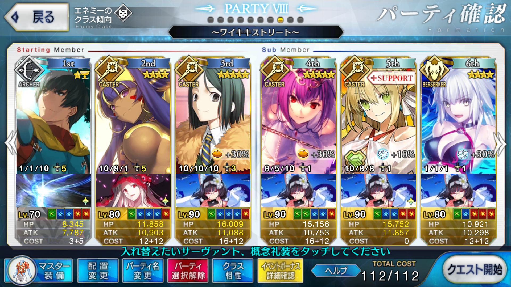

【FGO】2018年夏イベント サーヴァント・サマー・フェスティバル！ ワイキキストリート
この記事ではFGOイベントの周回を扱います。
編成画像にて最終再臨絵のネタバレがあるのでご注意を
基本方針
- 3T周回する
ドロップアイテム
- ミミ＄札
- 同人空想力
- 英雄の証
- 殺の魔石
- 殺の輝石
エネミー構成
- 2w ソウルイーター
- 3w セミラミス
編成例

アーラシュ→ニトクリス→ニトクリスで宝具を撃つ
アーラシュに凸龍脈、ニトクリスは火力を補うために凸黒聖杯を装備する
3wに追撃が必要になるが、クラス相性で有利な術のみが前に編成されているので、特に問題にはならない
スカディの凍える吹雪やトロピカルサマーのレベルがある程度上がっていれば安定する
マスター礼装のセーフティ・オイルでNPを10都合できるため、大神の叡智はLv6止まりでも問題なく運用できる
ドロップ礼装は3積み＋フレンド分搭載でき、未凸3（90） + ジャンヌオルタ（30） + フレンド分で120 + αとなる
コスト調整でアーラシュの礼装を凸龍脈にしているところがポイント
これで112ジャストとなる
もしマスターレベルが140に達していないようなら、レディ・フォクシーは凸ってしまい、同人誌礼装で底上げすると良い
目当ての礼装をつけたフレンド孔明がすぐに見つかるのであれば、W孔明でも運用は可能と思われる
周回用キャラ選別
アーラシュ
いつもの
ニトクリス
対殺周回の常連
スカディ、孔明と組めばNP増加礼装なしでも自前スキルと合わせて宝具を2連打できる
火力自体はそこまで高くないため、凸黒聖杯や新規マスター礼装トロピカルサマーのブルー・スプラッシュで補いたい
天属性のため、ソウルイーターにもセミラミスにも天地人相性が良い
ランスロット（狂）
スカディとセットで使えば、1wと2wで連続して宝具をブッパできる
Wスカディで3連射も不可能ではないだろうが、スカディのスキル育成難易度を考慮すると、フレンドから常に十分な育成を施したスカディを借りるのは難しい
ネロ（術）
NPを50チャージできる全体宝具キャスター
NPチャージと高倍率の攻撃バフスキルを持つため、周回向き
ただし、キャスターであることに加えて天地人属性の相性が悪いため、思ったほど火力は伸びない
不夜城のキャスター
セミラミスには王属性がついているため、NPを工面できるのであれば特攻が活かせる
オケアノスのキャスター
自前でNPを100以上チャージできる単体宝具キャスター
防御デバフスキルも持っており、火力補助に一役買う
天属性のため、天地人相性は良い